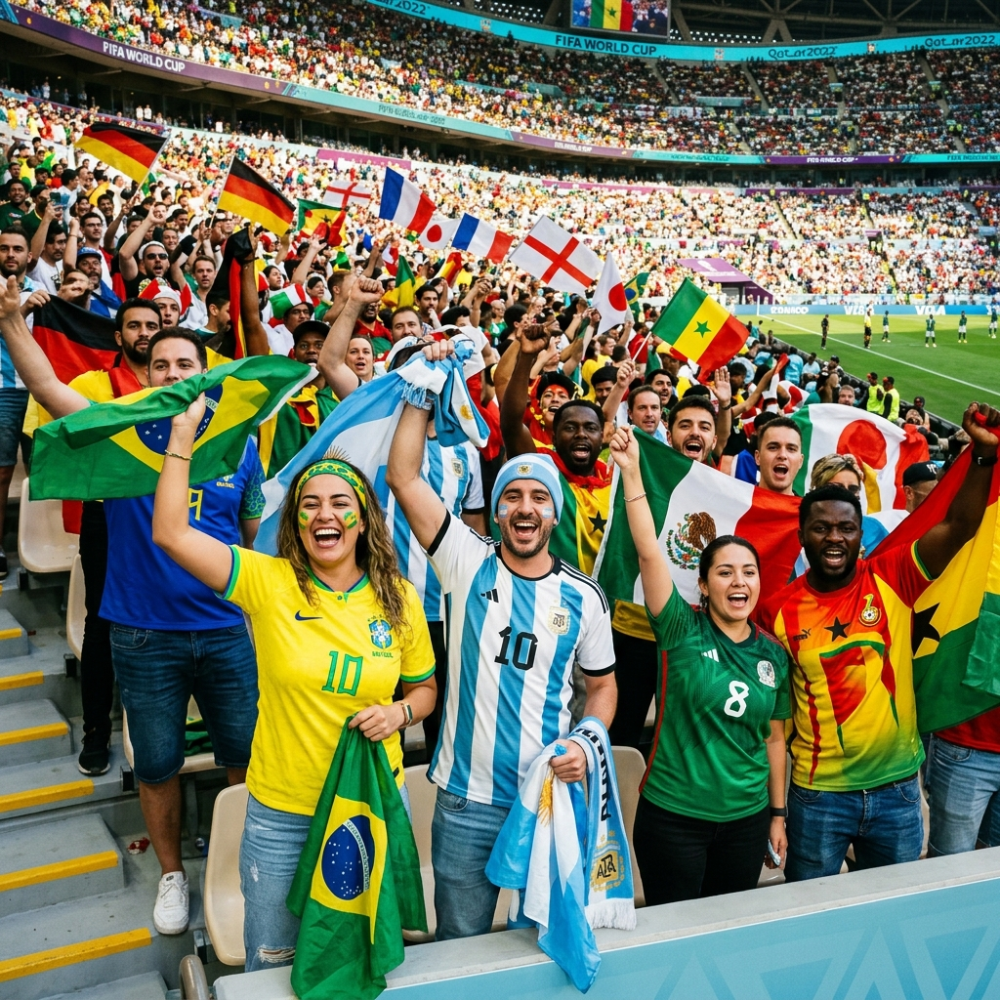
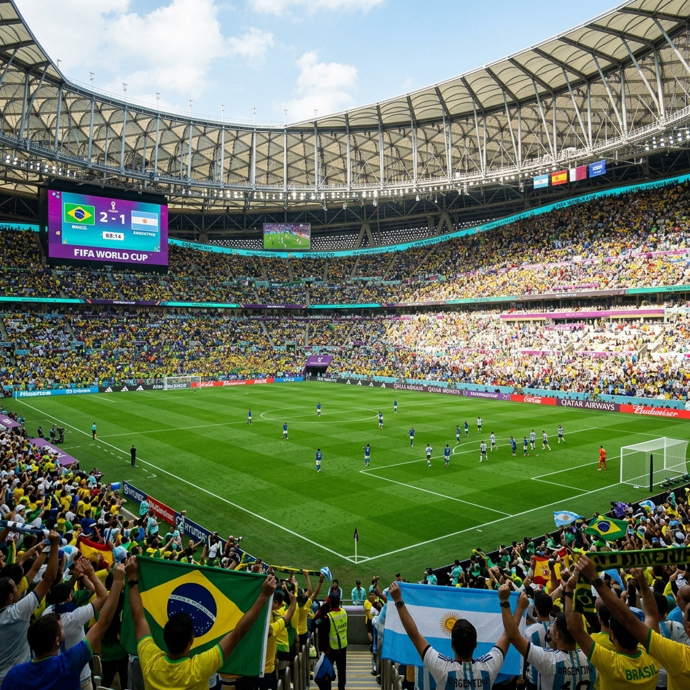

Quick Prompts:
MAP SELECTION
Select an element on the map
Click Seating Sections, Gates, Eco Hubs, or Accessibility Icons to view details.
No Active Incident Selected
Choose an incident from the Dispatch Deck on the left to begin generating real-time AI solutions.
CCTV MAIN FEED • SEC 103

Ingress Flow Density
74% Capacity
Average gate queue: 5.8m. Total checked: 63,410 / 80,000.
Transit Efficiency Tracker
Interval: 3.5m
Downtown express shuttles: 42 active. Rail capacity: Normal.
Waste Diversion & Sustainability
82% Diverted
Compost & recyclable cups sorted. Water saved: 42,300 liters.
Eco Cup Stock Remaining
91,240 units (94%)
Biodegradable cups in stock. Non-eco plastics: 0% in use.
Active Volunteers & Staff
420/450 Deployed
Standby crew: 30. Medical units: 10/10 operational.